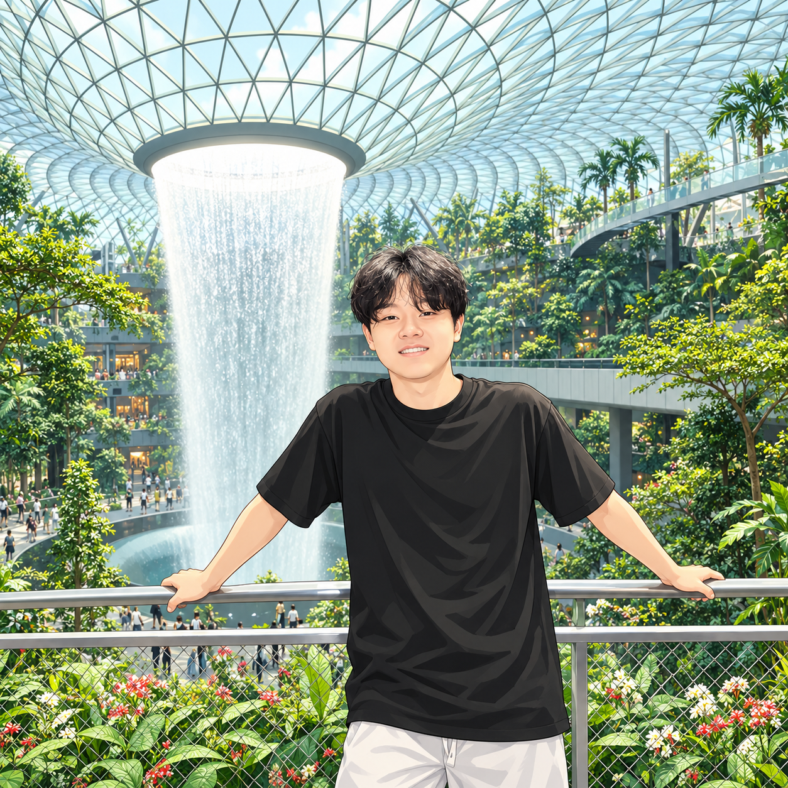
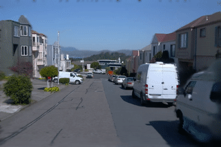
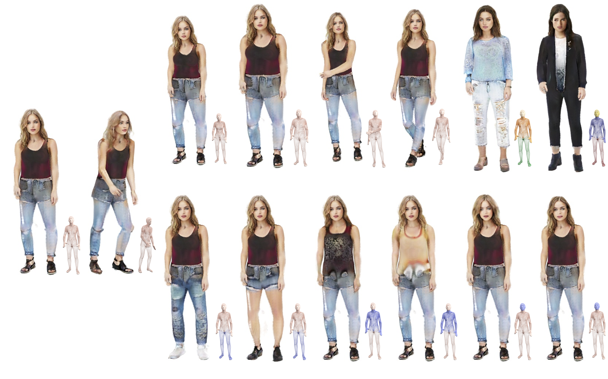

Jiaxin Huang | 黄嘉欣
I am currently pursuing a Ph.D. at
X-D Lab , Zhejiang University, under the guidance of
Prof.Yiyi Liao .
Prior to this, I completed my Bachelor's degree in Zhejiang University, graduating in June 2023.
My research interests primarily revolve around 3D computer vision, encompassing areas such as 3D scene reconstruction and controllable generation.
Email
/
Scholar
/
Twitter
/
Github

11/2026 – Now
Tencent Lightspeed
Research Intern (Project Up)
Mentor:
Weikai Chen
06/2026 – 10/2026
Ant Group Robbyant
Research Intern
Mentor:
Zehong Shen ,
Yujun Shen
10/2024 – 04/2026
ByteDance Pico
Research Intern
Mentor:
Bangbang Yang , Yuewen Ma
09/2023 - Now
Zhejiang University
Ph.D. Candidate
Advisor:
Yiyi Liao
08/2019 - 07/2023
Zhejiang University
Bachelor's Degree
Advisor:
Yiyi Liao
Selected Publications
* means equal contribution.
Gen3R: 3D Scene Generation Meets Feed-Forward Reconstruction
Jiaxin Huang ,
Yuanbo Yang,
Bangbang Yang ,
Lin Ma,
Yuewen Ma,
Yiyi Liao ,
CVPR , 2026
project page
/
arXiv
/
code
A generative model that creates multi-quantity 3D scenes from images via a unified latent space of geometry and appearance.
Vivid4D: Improving 4D Reconstruction from Monocular Video by Video Inpainting
Jiaxin Huang ,
Sheng Miao,
Bangbang Yang ,
Yuewen Ma,
Yiyi Liao ,
ICCV , 2025
project page
/
arXiv
A generative framework that addresses the challenge of reconstructing dynamic scenes from casual monocular videos with video diffusion model.

EVolSplat: Efficient Volume-based Gaussian Splatting for Urban View Synthesis
Jiaxin Huang ,
Dongfeng Bai,
Xu Yan ,
Hongyu Zhou ,
Yue Wang ,
Bingbing Liu,
Andreas Geiger ,
Yiyi Liao ,
CVPR , 2025
project page
/
arXiv
/
code
A generalizable framework that predicts 3D Gaussians across multiple frames within a unified volume using convolutional networks.
Efficient Depth-Guided Urban View Synthesis
∗ ,
Jiaxin Huang ∗ ,
Dongfeng Bai,
Weichao Qiu,
Bingbing Liu,
Andreas Geiger ,
Yiyi Liao ,
ECCV , 2024
project page
/
arXiv
/
code
A generalizable NeRF model that explicitly leverages geometric priors for feed-forward inference on unbounded sparse
urban scenes.

VeRi3D: Generative Vertex-based Radiance Fields for 3D Controllable Human Image Synthesis
Xinya Chen ,
Jiaxin Huang ,
Yanrui Bin,
Lu Yu ,
Yiyi Liao ,
ICCV , 2023
project page
/
arXiv
/
code
A generative human vertex-based radiance field parameterized by vertices of the parametric human template, SMPL.